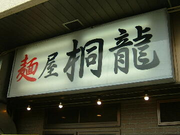
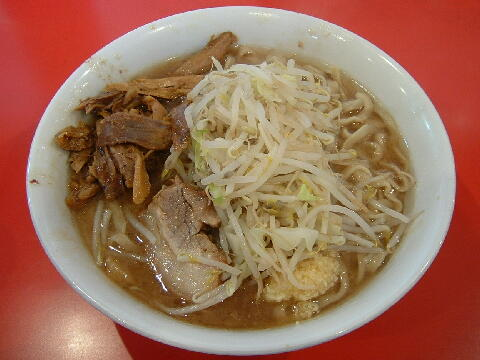

川口市 戸塚 3-36-18
月
11：15〜14：00 18：00〜22：00
日・木 11：15〜16：00

店員は、店主と助手数名。
コショウ、一味、醤油ダレ、お酢。
レンゲ有。エコ箸。ティッシュ有。名刺無。
BGMは、尾崎豊。
トッピングは、◎野菜、にんにく、あぶら、カラメ。
◎は元々入っている。カラメは卓上の醤油ダレと同じ。
なお桐龍では「にんにくなし」とは言わないこと（マシとの聞き間違いを防ぐため）。
麺屋 桐龍 桐龍のTwitter
麺屋 桐龍 桐龍の公式HP
麺屋 桐龍のブログ 桐龍のブログ
「ラーメン 桐龍」でヤフー検索
「ラーメン 桐龍」でヤフーリアルタイム検索
「ラーメン 桐龍」でグーグル検索

小らーめん ニンニク 鶏ほぐし
麺は、高橋製麺の桐龍専用小麦粉を使用したもの。太麺で縮れがありプリプリした食感
ぶたは、バラを使用した中ぶりなもの。柔らかくて美味い。
スープは、豚、鶏などを長時間炊いたトロミのあるもので非常に美味い。
ヤサイは、モヤシ8：キャベツ2の割合。丁度良い加減。
ニンニクは、小粒の刻みニンニク。ノーコールだと少なめ。
鶏ほぐしは現金50円で対応。
ＰＣ店